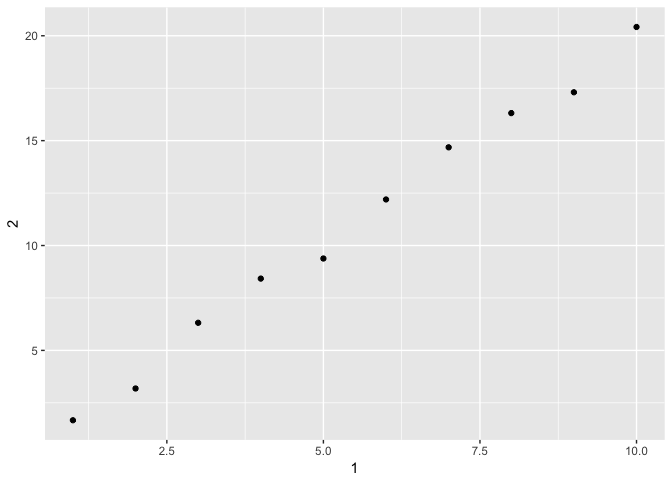

1. How can you tell if an object is a tibble? (Hint: try printing mtcars, which is a regular data frame).
is.tibble(mtcars)## [1] FALSEprint(mtcars)## mpg cyl disp hp drat wt qsec vs am gear carb
## Mazda RX4 21.0 6 160.0 110 3.90 2.620 16.46 0 1 4 4
## Mazda RX4 Wag 21.0 6 160.0 110 3.90 2.875 17.02 0 1 4 4
## Datsun 710 22.8 4 108.0 93 3.85 2.320 18.61 1 1 4 1
## Hornet 4 Drive 21.4 6 258.0 110 3.08 3.215 19.44 1 0 3 1
## Hornet Sportabout 18.7 8 360.0 175 3.15 3.440 17.02 0 0 3 2
## Valiant 18.1 6 225.0 105 2.76 3.460 20.22 1 0 3 1
## Duster 360 14.3 8 360.0 245 3.21 3.570 15.84 0 0 3 4
## Merc 240D 24.4 4 146.7 62 3.69 3.190 20.00 1 0 4 2
## Merc 230 22.8 4 140.8 95 3.92 3.150 22.90 1 0 4 2
## Merc 280 19.2 6 167.6 123 3.92 3.440 18.30 1 0 4 4
## Merc 280C 17.8 6 167.6 123 3.92 3.440 18.90 1 0 4 4
## Merc 450SE 16.4 8 275.8 180 3.07 4.070 17.40 0 0 3 3
## Merc 450SL 17.3 8 275.8 180 3.07 3.730 17.60 0 0 3 3
## Merc 450SLC 15.2 8 275.8 180 3.07 3.780 18.00 0 0 3 3
## Cadillac Fleetwood 10.4 8 472.0 205 2.93 5.250 17.98 0 0 3 4
## Lincoln Continental 10.4 8 460.0 215 3.00 5.424 17.82 0 0 3 4
## Chrysler Imperial 14.7 8 440.0 230 3.23 5.345 17.42 0 0 3 4
## Fiat 128 32.4 4 78.7 66 4.08 2.200 19.47 1 1 4 1
## Honda Civic 30.4 4 75.7 52 4.93 1.615 18.52 1 1 4 2
## Toyota Corolla 33.9 4 71.1 65 4.22 1.835 19.90 1 1 4 1
## Toyota Corona 21.5 4 120.1 97 3.70 2.465 20.01 1 0 3 1
## Dodge Challenger 15.5 8 318.0 150 2.76 3.520 16.87 0 0 3 2
## AMC Javelin 15.2 8 304.0 150 3.15 3.435 17.30 0 0 3 2
## Camaro Z28 13.3 8 350.0 245 3.73 3.840 15.41 0 0 3 4
## Pontiac Firebird 19.2 8 400.0 175 3.08 3.845 17.05 0 0 3 2
## Fiat X1-9 27.3 4 79.0 66 4.08 1.935 18.90 1 1 4 1
## Porsche 914-2 26.0 4 120.3 91 4.43 2.140 16.70 0 1 5 2
## Lotus Europa 30.4 4 95.1 113 3.77 1.513 16.90 1 1 5 2
## Ford Pantera L 15.8 8 351.0 264 4.22 3.170 14.50 0 1 5 4
## Ferrari Dino 19.7 6 145.0 175 3.62 2.770 15.50 0 1 5 6
## Maserati Bora 15.0 8 301.0 335 3.54 3.570 14.60 0 1 5 8
## Volvo 142E 21.4 4 121.0 109 4.11 2.780 18.60 1 1 4 2is.tibble(diamonds)## [1] TRUEprint(diamonds)## # A tibble: 53,940 × 10
## carat cut color clarity depth table price x y z
## <dbl> <ord> <ord> <ord> <dbl> <dbl> <int> <dbl> <dbl> <dbl>
## 1 0.23 Ideal E SI2 61.5 55 326 3.95 3.98 2.43
## 2 0.21 Premium E SI1 59.8 61 326 3.89 3.84 2.31
## 3 0.23 Good E VS1 56.9 65 327 4.05 4.07 2.31
## 4 0.29 Premium I VS2 62.4 58 334 4.20 4.23 2.63
## 5 0.31 Good J SI2 63.3 58 335 4.34 4.35 2.75
## 6 0.24 Very Good J VVS2 62.8 57 336 3.94 3.96 2.48
## 7 0.24 Very Good I VVS1 62.3 57 336 3.95 3.98 2.47
## 8 0.26 Very Good H SI1 61.9 55 337 4.07 4.11 2.53
## 9 0.22 Fair E VS2 65.1 61 337 3.87 3.78 2.49
## 10 0.23 Very Good H VS1 59.4 61 338 4.00 4.05 2.39
## # ... with 53,930 more rowsis.tibble() will print TRUE if a data set is a tibble and FALSE if not. A tibble will only print the first 10 rows in the console, while a data frame will print the entire data set.
2. Compare and contrast the following operations on a data.frame and equivalent tibble. What is different? Why might the default data frame behaviours cause you frustration?
df <- data.frame(abc = 1, xyz = "a")
tib <- as_tibble(df)
df$x## [1] a
## Levels: atib$x## Warning: Unknown column 'x'## NULL#the tibble does not return a value because the match is not identical to the variable name.
df[, "xyz"]## [1] a
## Levels: atib[, "xyz"]## # A tibble: 1 × 1
## xyz
## <fctr>
## 1 a#the tibble returns the values in a tibble
df[, c("abc", "xyz")]## abc xyz
## 1 1 atib[, c("abc", "xyz")]## # A tibble: 1 × 2
## abc xyz
## <dbl> <fctr>
## 1 1 a#the tible includes the variable type.3. If you have the name of a variable stored in an object, e.g. var <- “mpg”, how can you extract the reference variable from a tibble?
var <- "mpg"
mtcars %>%
as_tibble() %>%
.[[var]]## [1] 21.0 21.0 22.8 21.4 18.7 18.1 14.3 24.4 22.8 19.2 17.8 16.4 17.3 15.2
## [15] 10.4 10.4 14.7 32.4 30.4 33.9 21.5 15.5 15.2 13.3 19.2 27.3 26.0 30.4
## [29] 15.8 19.7 15.0 21.4mtcars %>%
as_tibble() %>%
.$mpg## [1] 21.0 21.0 22.8 21.4 18.7 18.1 14.3 24.4 22.8 19.2 17.8 16.4 17.3 15.2
## [15] 10.4 10.4 14.7 32.4 30.4 33.9 21.5 15.5 15.2 13.3 19.2 27.3 26.0 30.4
## [29] 15.8 19.7 15.0 21.4mtcars %>%
as_tibble() %>%
.[["mpg"]]## [1] 21.0 21.0 22.8 21.4 18.7 18.1 14.3 24.4 22.8 19.2 17.8 16.4 17.3 15.2
## [15] 10.4 10.4 14.7 32.4 30.4 33.9 21.5 15.5 15.2 13.3 19.2 27.3 26.0 30.4
## [29] 15.8 19.7 15.0 21.4$ extracts by name and is not compatable with stored variables. .[[var]] will extract the variable stored in var, but if searching for a variable by name quotes must be used.
4. Practice referring to non-syntactic names in the following data frame by:
annoying <- tibble(
`1` = 1:10,
`2` = `1` * 2 + rnorm(length(`1`))
)
#Extracting the variable called 1.
annoying[[1]]## [1] 1 2 3 4 5 6 7 8 9 10#Plotting a scatterplot of 1 vs 2.
ggplot(annoying, aes(`1`, `2`)) +
geom_point()
#Creating a new column called 3 which is 2 divided by 1.
annoying2 <- mutate(annoying, `3` = `2`/`1`)
#Renaming the columns to one, two and three.
annoying2 %>%
rename(
one = `1`,
two = `2`,
three = `3`
)## # A tibble: 10 × 3
## one two three
## <int> <dbl> <dbl>
## 1 1 2.902309 2.902309
## 2 2 6.493529 3.246765
## 3 3 7.205096 2.401699
## 4 4 8.244604 2.061151
## 5 5 10.049933 2.009987
## 6 6 12.214558 2.035760
## 7 7 13.736141 1.962306
## 8 8 14.842382 1.855298
## 9 9 18.872150 2.096906
## 10 10 20.241427 2.0241435. What does tibble::enframe() do? When might you use it?
x <- (letters) %>%
enframe(name = "red", value = "blue") %>%
print()## # A tibble: 26 × 2
## red blue
## <int> <chr>
## 1 1 a
## 2 2 b
## 3 3 c
## 4 4 d
## 5 5 e
## 6 6 f
## 7 7 g
## 8 8 h
## 9 9 i
## 10 10 j
## # ... with 16 more rowsenframe() coerces a vector into a tibble. The position is listed under “name” and the value under “value”. Arguments to rename the columns can be passed in enframe().
6. What option controls how many additional column names are printed at the footer of a tibble?
print(flights)## # A tibble: 336,776 × 19
## year month day dep_time sched_dep_time dep_delay arr_time
## <int> <int> <int> <int> <int> <dbl> <int>
## 1 2013 1 1 517 515 2 830
## 2 2013 1 1 533 529 4 850
## 3 2013 1 1 542 540 2 923
## 4 2013 1 1 544 545 -1 1004
## 5 2013 1 1 554 600 -6 812
## 6 2013 1 1 554 558 -4 740
## 7 2013 1 1 555 600 -5 913
## 8 2013 1 1 557 600 -3 709
## 9 2013 1 1 557 600 -3 838
## 10 2013 1 1 558 600 -2 753
## # ... with 336,766 more rows, and 12 more variables: sched_arr_time <int>,
## # arr_delay <dbl>, carrier <chr>, flight <int>, tailnum <chr>,
## # origin <chr>, dest <chr>, air_time <dbl>, distance <dbl>, hour <dbl>,
## # minute <dbl>, time_hour <dttm>options(tibble.max_extra_cols = 3)
print (flights)## # A tibble: 336,776 × 19
## year month day dep_time sched_dep_time dep_delay arr_time
## <int> <int> <int> <int> <int> <dbl> <int>
## 1 2013 1 1 517 515 2 830
## 2 2013 1 1 533 529 4 850
## 3 2013 1 1 542 540 2 923
## 4 2013 1 1 544 545 -1 1004
## 5 2013 1 1 554 600 -6 812
## 6 2013 1 1 554 558 -4 740
## 7 2013 1 1 555 600 -5 913
## 8 2013 1 1 557 600 -3 709
## 9 2013 1 1 557 600 -3 838
## 10 2013 1 1 558 600 -2 753
## # ... with 336,766 more rows, and 12 more variables: sched_arr_time <int>,
## # arr_delay <dbl>, carrier <chr>, ...